layout: true <div class="header"><img src="https://rosin-project.eu/wp-content/uploads/rosin_ack_logo_wide.png" style="background-color:transparent"/></div> <div class="footer"><img src="https://www.ipa.fraunhofer.de/content/dam/ipa/ipa.svg" /><p>© Fraunhofer IPA</p></div> <div class="triangle"></div> --- class: center, middle name: main_title # Navigation using ROS 2 ## Mapping <img src="../static/Map_cost.png" alt="Map_cost" style="height:300px" class="image-center"/> --- # SLAM - Simultaneous Localization And Mapping 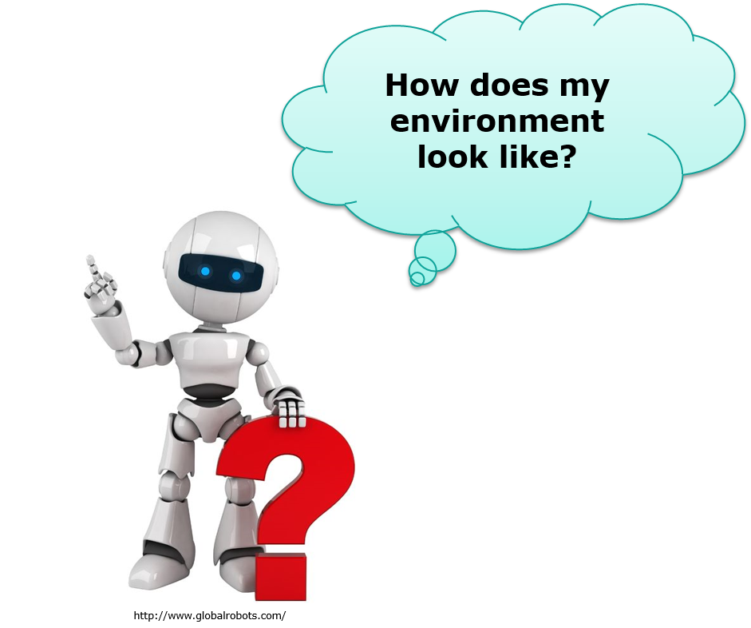 --- ## Mapping - SLAM * SLAM: Estimate the pose of a robot and the map of the environment at the same time * Localization: inferring location given a map * Mapping: inferring a map given location * SLAM: learning a map and locating the robot simultaneously * The goal of SLAM is to create or enhance an environment map. * Mathematically, - Given the Robot's Controls and Observations - Calculate the Map of the environment and Path of the robot. * Maps represent the environment, either 2D or 3D. * Is actually a tough problem to solve! Troubling humanity since 1985 [source](http://ais.informatik.uni-freiburg.de/teaching/ws12/mapping/pdf/slam01-intro.pdf) --- ## Mapping - Algorithms * Kalman Filters - [source](http://ais.informatik.uni-freiburg.de/teaching/ws12/mapping/pdf/slam08-kf-wrapup.pdf) - Probabilistic, Bayes filter, best for Linear Models and Gaussian distributions - Further specialisations - Extended KF, Unscented KF, Extended Information Filter (EIF), Sparse efficiency * Particle Filters - [source](http://ais.informatik.uni-freiburg.de/teaching/ws12/mapping/pdf/slam09-particle-filter.pdf) - Probabilistic, Recursive Bayes filter, also appropriate for non-Gaussian distributions - AKA Monte Carlo Localisation - most commonly used * Graph based - [source](http://ais.informatik.uni-freiburg.de/teaching/ws12/mapping/pdf/slam17-ls-landmarks.pdf) - Deterministic, Graph of a problem with nodes for poses & edges for spatial constraints between poses - Build the graph and find a node configuration that minimizes the error introduced by the constraints --- ## Mapping - Map types .cols[ .fifty[ 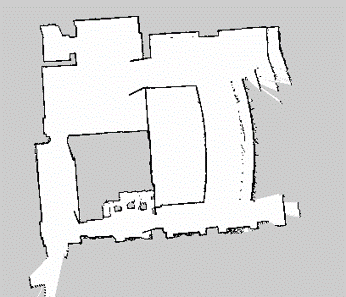 ] .fifty[ 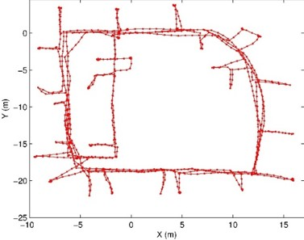 ] .fifty[ 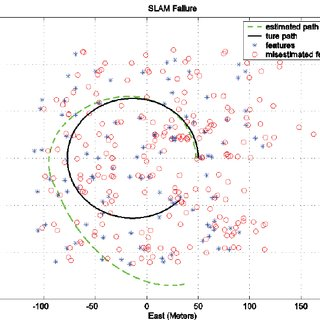 ] .fifty[ 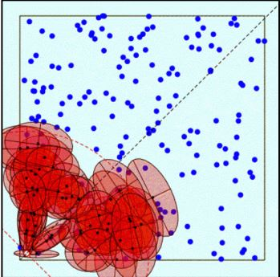 ] ] .cols[ .fifty[ Grid based 2d map ] .fifty[ Graph based ] .fifty[ Feature based map (Zhang & Xie & Adams, 05). <!-- Given: Observations of nearby features, Estimate: Map of features, path --> ] .fifty[ Landmark based ] ] * Grid based maps * Binary Occupancy map * Probability is calculated for each grid cell (Bayes filter) * Occupied - 1; Not occupied - 0; No knowledge - 0.5 [source](http://ais.informatik.uni-freiburg.de/teaching/ss12/robotics/slides/12-slam.pdf) --- ## Mapping - 3D Maps ### Octree * Tree-based data structure * Each voxel in an octree represents the space contained in a cubic volume. * The minimum voxel size determines the resolution of the octree. 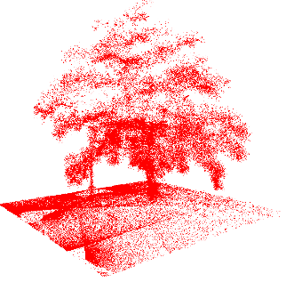 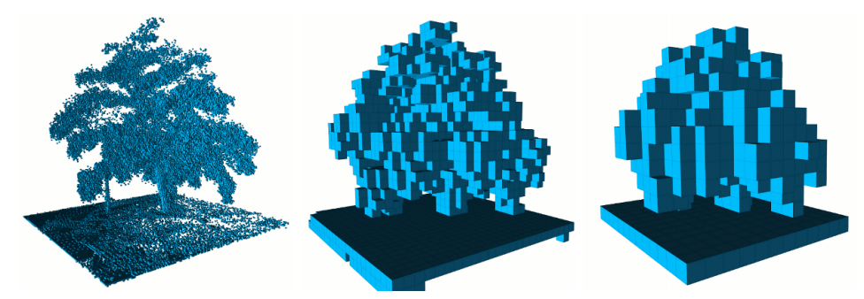 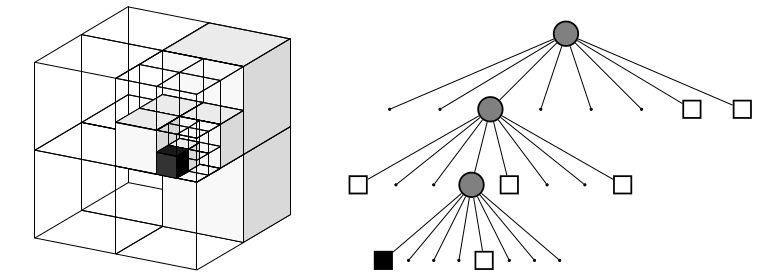 Occupied voxels are displayed in resolutions 0.08 m, 0.64 , and 1.28 m. source: [OctoMap](http://www.arminhornung.de/Research/pub/hornung13auro.pdf) --- ## Mapping - Pose Inaccuracy .cols[ .fifty[ <img src="../static/slam_case.png" alt="slam_case" style="height:100px" class="image-left"/> ] .fifty[ 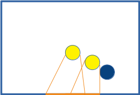 ] .fifty[ 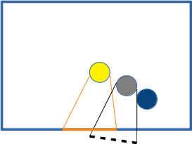 ] .fifty[ 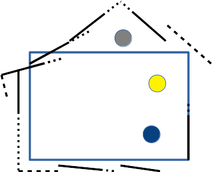 ] .fifty[ 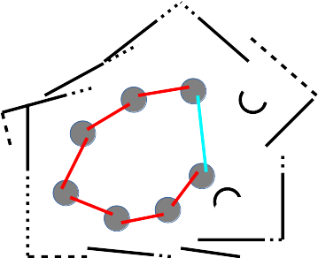 ] ] .cols[ .fifty[ Fig 1 ] .fifty[ Fig 2 ] .fifty[ Fig 3 ] .fifty[ Fig 4 ] .fifty[ Fig 5 ] ] Fig 1: Closed environment with Robot (Yellow) and Obstacle (Blue) Fig 2: When robot moves from A to B and is perfectly tracked (Perfect sensor & odometry) Fig 3: When robot moves from A to B but has pose inaccuracy (Imperfect sensor &/or odom) Fig 4: Mapping with pose inaccuracy (Imperfect sensor & odom) Fig 5: Loop closure problem: After one loop, Starting Pose A = Ending Pose B in real world, but not in map. --- ## Mapping - SLAM in ROS2 SLAM for ROS2 unfortunately does not have a golden standard yet. Some contenders are: * LaMa (2D) - IRIS Labs - efficiency, SLAM (scan matching), particle filter SLAM, scan matching base Localization <!-- the comparison of the scanned data, called scan matching with already created map or other scanned data. Hector SLAM --> <!-- The goal of scan matching is to find the relative pose (or transform) between the two robot positions where the scans were taken --> * Cartographer (2D/3D) - Google - Ported from ROS 1, used often * SLAM Toolbox (2D) - Steve Macenski - Currently shipped with Navigation2, needs support. [Help if you can!](https://discourse.ros.org/t/slam-toolbox-the-new-default-slam-implementation-for-ros2/12369) (LaMa vs SLAM Toolbox)[https://www.youtube.com/watch?time_continue=48&v=Cgcl3LcFnEs&feature=emb_logo] --- ## Mapping - SLAM ### 2D SLAM Video <video src="../static/2d_mapping.mp4" style="height:300px"></video> It used a monocular camera. The system localizes the camera, builds new map and tries to close loops It also support for RGB-D camera and stereo camera. [Source code, ROS1](https://github.com/raulmur/ORB_SLAM2) --- ## Mapping - SLAM ### 3D SLAM Video <video src="../static/3d_mapping.mp4" style="height:300px"></video> IMU + 3D Lidar [Cartographer 3D SLAM example](https://github.com/inkyusa/cartographer_kitti_config) --- ## SLAM - Questions ?